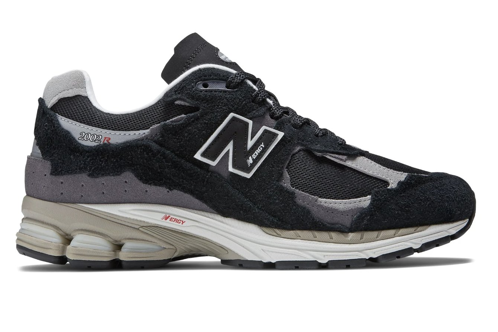

The Best Shoes of 2023
#10 Kobe 6 Reverse Grinch
"This reverse colorway turns the original design upside down in remembrance of the legendary Kobe 6 colorway, the Kobe 6 Grinch. With its striking bright green upper and contrasting details, it has a bold, striking appearance. As a tribute to Kobe Bryant's legacy, these shoes are in great demand among collectors and fans.
#9 A Ma Maniere x Air Jordan 5
"The A Ma Maniere expands its roster of Air Jordan partnerships. Pre-yellowed outsoles and netting, blue accents, and a white nubuck upper give a premium upgrade to the OG-inspired colour scheme. The right tongue, outsole, and monogram liner are emblazoned with the "A" logo of Ma Maniere.

#8 New Balance 2002R Protection Package "Grey Black"
"The 2002R Protection Pack by New Balance made a comeback. The torn-up panelling, which was first released as a collection, has become popular in recent years. The pre-distressed sneaker has been updated with some technical elements taken from New Balance's outdoor collection. Though the excitement surrounding sneakers receiving the protection pack treatment has subsided recently, there's no doubt that the 2002R looks best when the panelling is ragged.
#7 Nike SB Dunk Low Jarritos
"These SB Dunks, modelled after the well-known Mexican soft drink Jarritos, feature vivid hues and striking patterns. They have a variety of textures and patterns that bring to mind the lively and vibrant branding of Jarritos. These sneakers are a distinctive item ideal for people who enjoy a fun and distinctive look.
#6 Air Jordan 4 Retro Yellow Thunder
"Although the iconic Jordan 4s have somewhat cooled off since their heyday not too long ago, the Jordan 4 Thunder demonstrated that this is a silhouette that, when done correctly, can still pack a punch. The striking contrast between bright yellow and deep black appears just as sleek today as it did when it was first introduced back in 2006, and the high-quality nubuck used on the uppers lends the entire ensemble an incredibly opulent vibe.
#5 Air Jordan 3 J. Balvin Medellin Sunset
This Jordan 3 is a bright and colorful partnership with artist J. Balvin, with a design influenced by Medellin's sunsets. It embodies Balvin's vibrant and eclectic style by fusing striking hues with distinctive textures. For fans of both Jordan and J. Balvin, it's a unique piece.

#4 Air Jordan 3 Reimagined White Cement
"This contemporary version of the iconic Air Jordan 3 maintains the iconic white cement colorway while incorporating new materials and minor design updates. It's a must-have for collectors and new fans alike, maintaining its heritage aesthetic while providing a new angle.
#3 Corteiz X Nike Air Max 95 SP ‘Pink Beam’
"Although this year has been huge for the sneaker industry, the Corteiz x Nike Air Max 95 SP "Pink Beam" deserves special recognition if I had to pick one of the greatest sneakers of 2023. It is impossible to overstate the importance of this trainer to British culture, and Corteiz killed it with the release and guerilla marketing campaign.
#2 Jordan 1 Low Travis Scott Olive
"This Jordan 1 Low, which was created in partnership with artist Travis Scott, has an exclusive olive green colorway. Premium materials are used in its construction, and Scott's trademark reverse Swoosh is located on the side. Fans of Travis Scott and Michael Jordan will find this low-top version to be more wearable and casual.
#1 Air Jordan 4 Nike SB SP Sail Pine Green
"This sneaker features a new, contemporary take on the iconic Jordan 4 design. Its sail-coloured leather upper and pine green accents give it a stylish yet eye-catching appearance. For those who love sneakers, the shoe is a versatile option because it is made with both style and performance in mind.